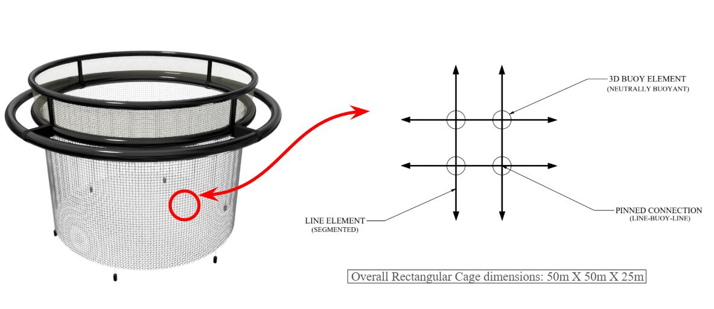
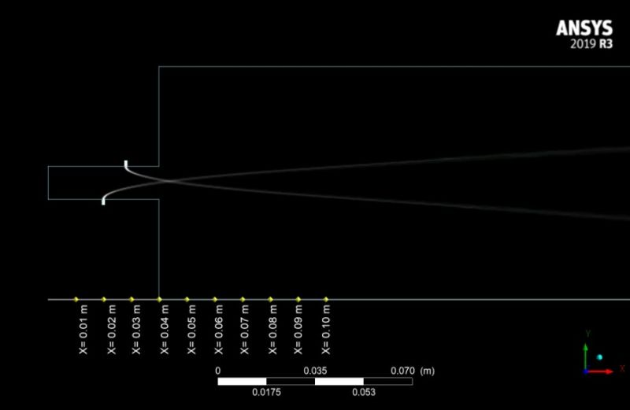
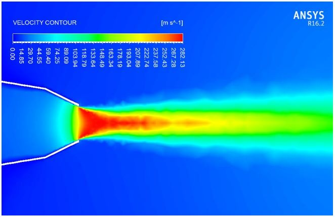
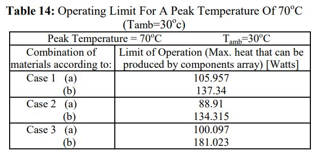
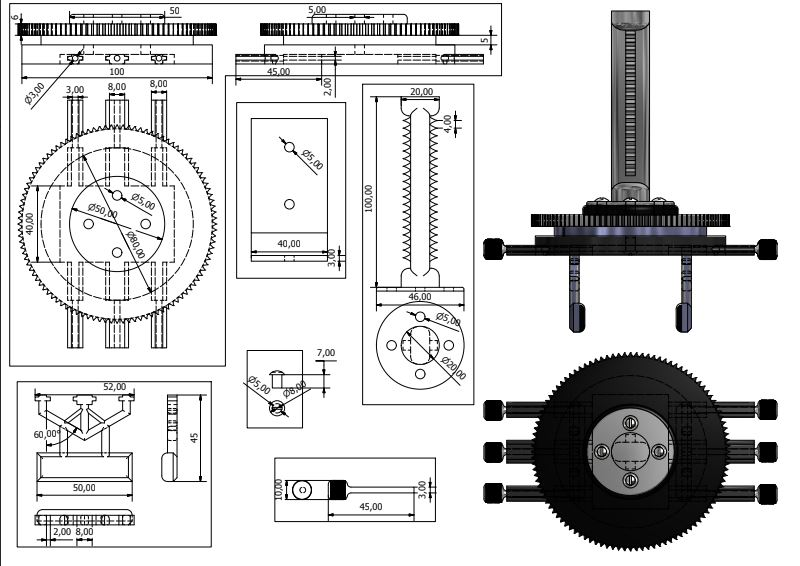

Effect of Spatial Distribution of Sinker Arrays on Volume Deformation in Offshore Aquaculture Cages

Numerical investigation on Fuel Jet Dynamics using Discrete Phase Model in Diesel engine

A Numerical Investigation on Flow Characteristics of Jets Emerging from a Multi-Lobed Nozzle with Pointed Corrugations

Determination of Operational Limit for a Conduction Cooled 6U Versa Module Eurocard

Precision Tool Design for Pick-and-Place Applications in Manufacturing